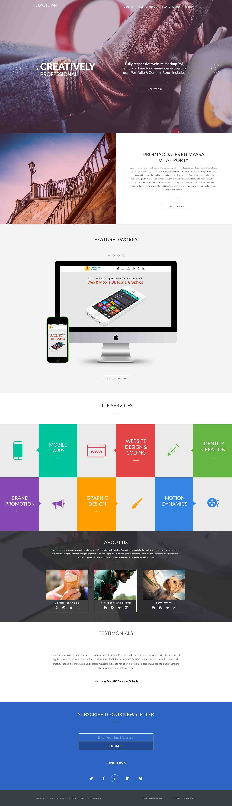
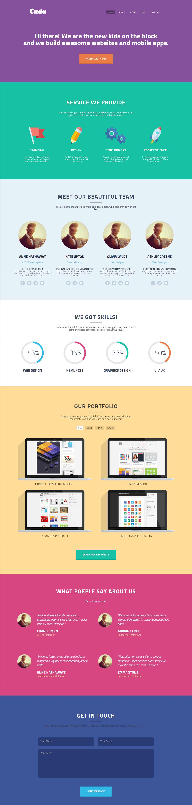
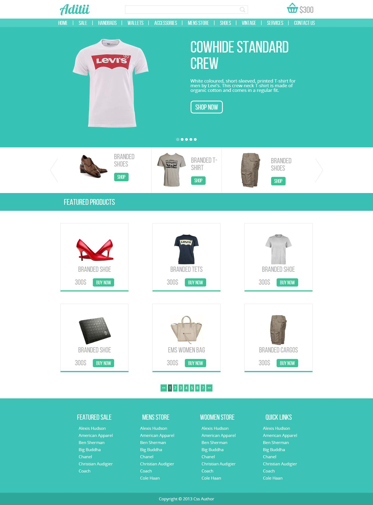
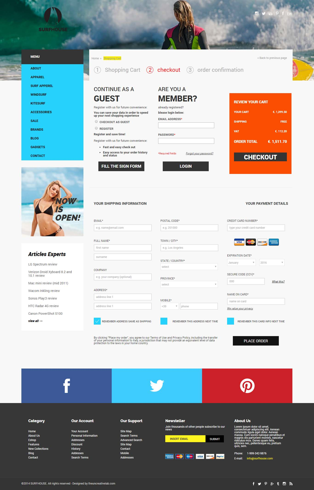
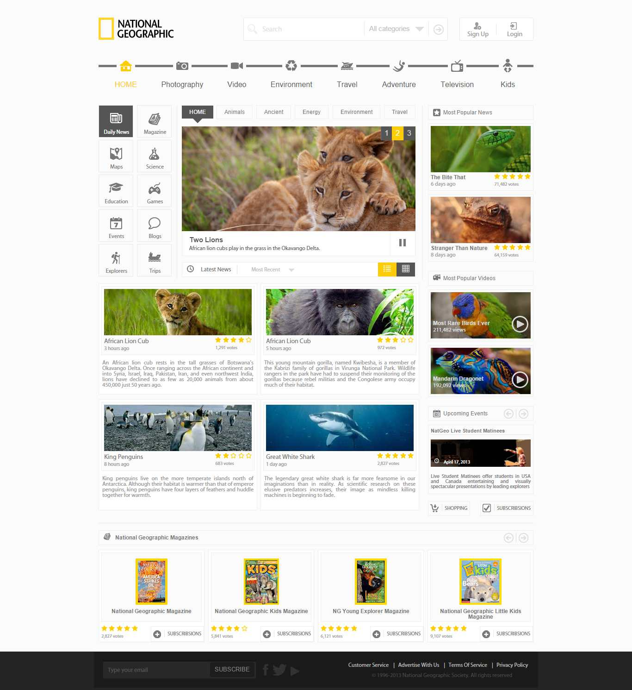
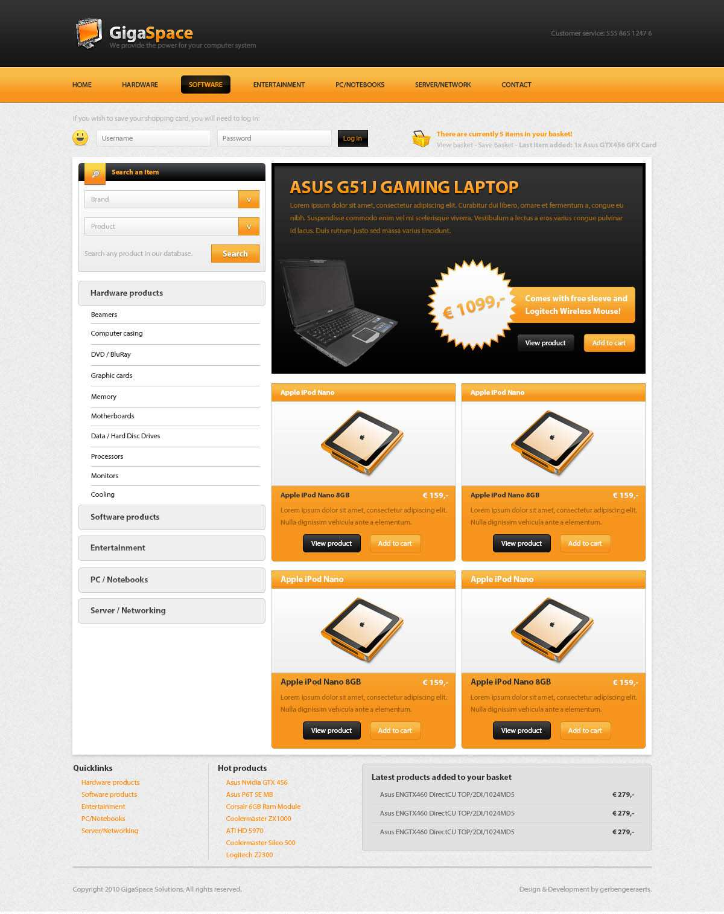

Welcome
↓ Here you can find examples of my works ↓

My project at IT School, landing page, used bootstrap 3, JQuery, owl-carousel-2, circle-progress.js plugin, added some scripts for smooth scrolling, and smooth transition on links click. Project contains interesting animation, and hexagon blocks.
Link to project on Github
SEE WORK

Landing page, for coding used SCSS, used bootstrap 4, JQuery, owl-carousel-2, masonry.js plugin for responsive gallery, circle-progress.js plugin, added some scripts for smooth scrolling.
Link to project on Github
SEE WORK

Adaptive template, used bootstrap3 Grid, OwlCarousel2, some JQuery function for correct displaying mobile menu and adding effects, toggle classes.
Link to projetc on Github
SEE WORK

This template contain 3 page, design is responsive. Using: jQuery, jQuery UI (stylized element
Range), Bootstrap3 (carousel and grid).
jQuery plugins: jReject, Magnific Popup. Template displays with all new browsers include IE11
and higher. For
old browser users get message with proposal update browser.
Link to projetc on Github
SEE WORK

Adaptive one page template, used bootstrap 3, jQuery, jReject, plugins Circle Progress Bar.
Template displays with all new browsers include IE11 and higher. For
old browser users get message with proposal update browser.
Link to projetc on Github
SEE WORK

Adaptive one page template, used bootstrap 3, jQuery, jReject and Owl Carousel 2 (second
carousel on the site). Template displays with all new browsers include IE11 and higher. For
old browser users get message with proposal update browser.
Link to projetc on Github
SEE WORK

This template contain 6 page (index.html, productpage.html shopcart.html, cart.html,
contact.html, and checkout.html), used crossbrowser block layout, work on ie8+, with stylizing
some elements like checkbox and select. Used plugin owl carousel 2. Also used jQuery for various
functcions, like as resizing image, applying some values etc.
Link to projetc on Github
SEE WORK

One page template with fixed layout, displays on IE8+, used cross browser block layout, stylized
select, bootstrap carousel, jQuery.
Link to projetc on Github
SEE WORK

My first project. Simple one page template for internet shop, used jQuery, accordion menu. Displays on IE8 and higher.
Link to projetc on Github
SEE WORK